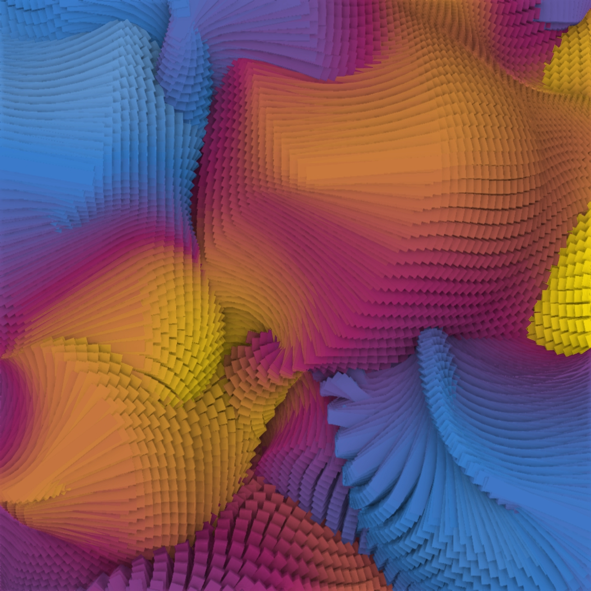

This demo is gonna help you structure your code
Let's type a long paragraph to see internal linking in action
Most important: What exactly are we writing when we’re doing all of this writing? I won’t pretend to coin a whole new term here; I still think the best we can muster is a more fitting analogue. And if we mu “Is this the last line or is there more?” “Is the writer really trying to say something here, or just setting up a larger point?” “Does this part have the information I’m looking for?” Most important: What exactly are we writing when we’re doing all of this writing? I won’t pretend to coin a whole new term here; I still think the best we can muster is a more fitting analogue. And if we must find an analogue in an existing literary unit, I propose the paragraph. Our constant writing has begun to feel like a neverending digital paragraph. Not a tight, stabbing paragraph from The Sun Also Rises or even a graceful, sometimes-slinking, sometimes-soaring paragraph from Absalom! Absalom!, I mean a convoluted, haphazard, meandering paragraph, something like Kerouac’s original draft of On the Road–only taped together by bytes. And 1 percent as interesting. Paragraphs, particularly those that wrap from one page to the next, inherently possess a necessary suspension that tightens the reader’s focus yet breaks down the narrative into digestable sections. Just like emails or blogs or texts. The mental questions while reading all of these feel the same: “Is this the last line or is there more?” “Is the writer really trying to say something here, or just setting up a larger point?” “Does this part have the information I’m looking for?”
Class Selector